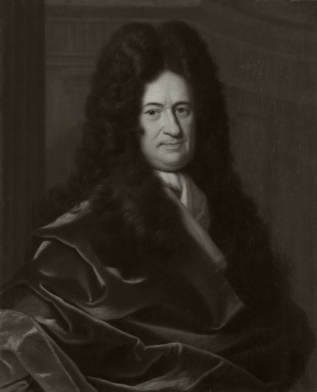

"百科全书式"的德国哲学家：单子论、前定和谐、充足理由律、可能世界——他用一个精密的理性体系为宇宙写下说明书；同时他又是微积分的发明者之一、二进制的先驱、欧洲与中国思想交流的推动者。他是近代理性主义最后的集大成者，也是启蒙哲学最早的预言者。
莱布尼茨哲学从"单子"的微观宇宙出发，以"前定和谐"缝合万千单子，以"充足理由律"与"两种真理"奠定逻辑基础，最后以"最佳可能世界"回答世界的意义。以下六个概念构成其思想骨架——点击卡片进入详细解读。
宇宙由无数不可再分的"单子"构成：每个单子都有知觉与欲求，都是"没有窗口"的独立宇宙——一花一世界。
单子互不交流，却步调一致——因为它们由上帝"预先编排"得像两台同步的钟。世界是精密的合奏。
凡事实必有理由，凡命题必可证明。没有理由的事实不存在——充足理由律与矛盾律并列为两大基本原理。
"自然从不跳跃"：从无机物到植物、从动物到人、从知觉到理性——存在是一架连续攀升的阶梯。
上帝在无限多的可能世界中，选择了最完满的一个——"我们生活于其中者，是一切可能世界中最好的"。
理性真理（必然、先天、矛盾律保证）与事实真理（偶然、经验、充足理由保证）——逻辑与经验各有其位。
莱布尼茨著作零散而庞杂：论文、书信、手稿远多于成书。以下五部构成理解其思想的主干——从正式出版的《神义论》，到身后才整理问世的《单子论》与《人类理解新论》，每部均含详细解读。
九十节短文，浓缩全部体系：单子、知觉、前定和谐、连续律、可能世界——近代形而上学的"袖珍百科全书"。
为"世界最好"辩护：面对恶的存在，论证全知全能至善的上帝与自由意志相容。启蒙时代神学哲学的里程碑。
以对话体逐章反驳洛克的"白板说"：心灵不是白板，而是"有着纹理的大理石"——天赋观念的理性主义答辩。
写给阿尔诺的哲学纲领：个体概念、充足理由、预定和谐——莱布尼茨成熟体系的第一次完整表达。
欧洲与中国的相遇：莱布尼茨从传教士书信中认识中国文明，主张欧洲与东亚"互相启蒙"——启蒙时代的文明对话。
九十节的短文，逻辑清晰、节奏明快——虽然概念密集，但每一节只有一两句。读三遍：第一遍通读，第二遍逐节划线，第三遍配合本书的"核心概念"页。
《单子论》是"压缩版"，《形而上学》是"展开版"——它有更多论证与例子，能帮你理解"个体概念""充足理由""前定和谐"的来源。
以"洛克 vs 莱布尼茨"的方式理解认识论之争：天赋观念 vs 白板说。挑选"论天赋观念"与"论抽象观念"两卷读即可，不必全卷。
读其"序言"与"概论"两章（有单行节译本）——理解"恶之问题"与"最佳世界"。这是莱布尼茨生前唯一出版的长篇哲学著作。
对照斯宾诺莎（一元实体 vs 单子多元）与笛卡尔（二元论 vs 前定和谐）；再看牛顿与莱布尼茨的"微积分之争"、二进制与计算机的渊源，体会这位"最后一位百科全书式思想家"的多面性。
本站是为系统学习莱布尼茨哲学而做的导读。内容以概念为骨架、以著作为血肉——概念页展开每个核心命题的定义、论证、实例与延伸思考；著作页逐部解读背景、核心论点、结构要点与关键段落；生平页还原一个在宫廷、科学院与信件网络中奔波的"永动式"思想家；名言页提供直接感受其文字的入口。
莱布尼茨是近代哲学中最"多面"的思想家：他是逻辑学家（充足理由律）、数学家（微积分、二进制）、外交家（与欧洲各国宫廷通信）、神学家（神义论）、汉学家（《中国近事》）——他一生没有完成一部"体系专著"，《单子论》只是九十节纲要，但他的体系却以"可能性"的方式渗透了整个欧洲哲学。
本站所有引文若为概括性表述，均标注"意译"；术语翻译全书统一。后续将不断扩充内容——新增概念卡片将直接追加到概念页，无需改动其他页面。